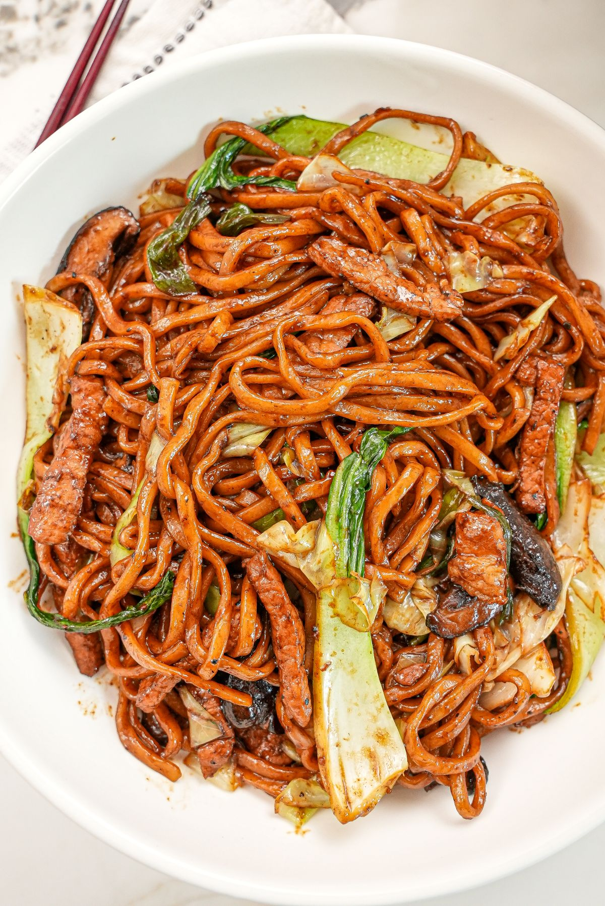

Home
Shanghai Fried Noodles

Image of Shanghai Fried Noodles
Ingredients
- 200–250 g thick wheat noodles (fresh or dried)
- 1–2 tbsp oil
- 2 cloves garlic, minced
- 1 egg
- 1–2 tbsp light soy sauce
- 1/2 tsp dark soy sauce
Instructions
- Boil noodles until just cooked. Drain well.
- Heat pan on medium-high with oil.
- Scramble egg quickly, remove and set aside.
- Add a bit more oil.
- Add garlic (and meat if using), stir-fry until fragrant/cooked.
- Add noodles and toss to coat in oil.
- Add light soy + dark soy.
- Toss on high heat for 1–2 minutes until noodles are hot and slightly chewy.
- Add egg back in, toss once more.
- Optional spring onions on top.